,
,  at Brewster
at Brewster  reflection is total with an evanescent field.
reflection is total with an evanescent field.
Normal incidence
Continuity of
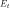
and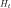
: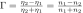
,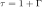
;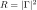
, . Identical to a transmission-line mismatch with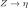
.Oblique incidence (derivation)
The tangential wavevector must be equal on both sides at every point of the interface:
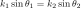
(Snell) and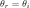
. Matching tangential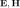
separately for (s, TE) and
(s, TE) and 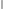
(p, TM) polarisation gives the coefficients in the summary (non-magnetic media), with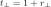
,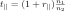
(Brewster 1815). Power: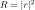
,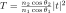
.Picture
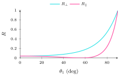
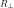
and versus angle of incidence; vanishes at Brewster's angle.
versus angle of incidence; vanishes at Brewster's angle.
Air to glass ( ): vanishes at Brewster's angle 56.3°.
): vanishes at Brewster's angle 56.3°.
Total internal reflection
For  and :
and :
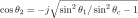
,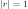
with a polarisation-dependent phase (the basis of waveguide modes). The transmitted field is evanescent,
(the basis of waveguide modes). The transmitted field is evanescent,  ,
, 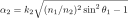
: penetration depth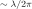
. Bringing a second medium within this depth gives frustrated TIR — optical tunnelling, the analogue of quantum tunnelling.Worked example
Silicon (
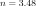
) to air at 1550 nm: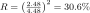
per facet. A quarter-wave anti-reflection layer of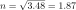
(e.g. Si N
N -like), thickness
-like), thickness 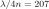
nm, cancels it. Critical angle Si/air: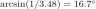
— why LEDs trap light (extraction efficiency).Engineering applications
Anti-reflection coatings on solar cells and lenses, Brewster windows in gas lasers, polarising beam splitters, prism couplers and ATR spectroscopy (evanescent sensing), fibre guidance by TIR, radar absorbers.
Pitfall
Two conventions exist for the sign of  ; they differ by
; they differ by  at normal incidence. Choose one and keep it in interference calculations.
at normal incidence. Choose one and keep it in interference calculations.